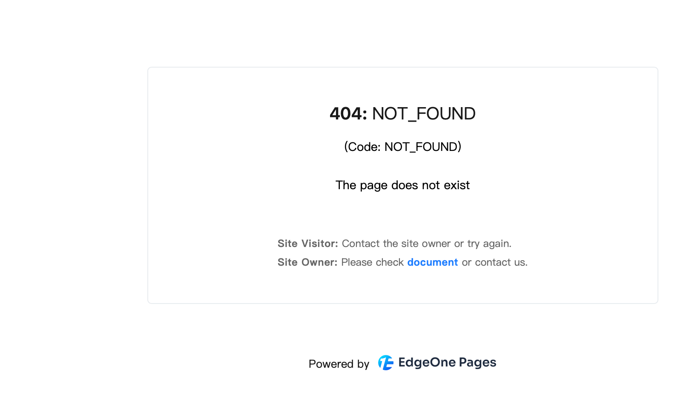
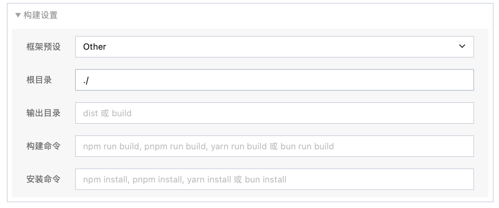
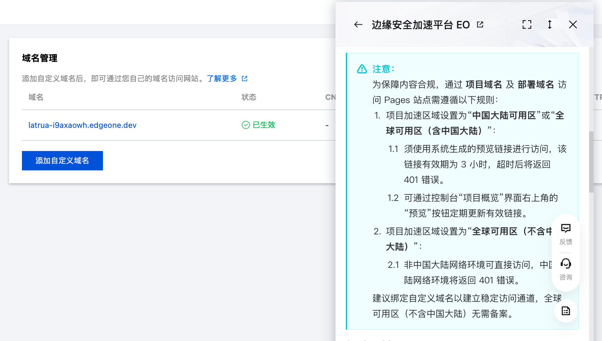
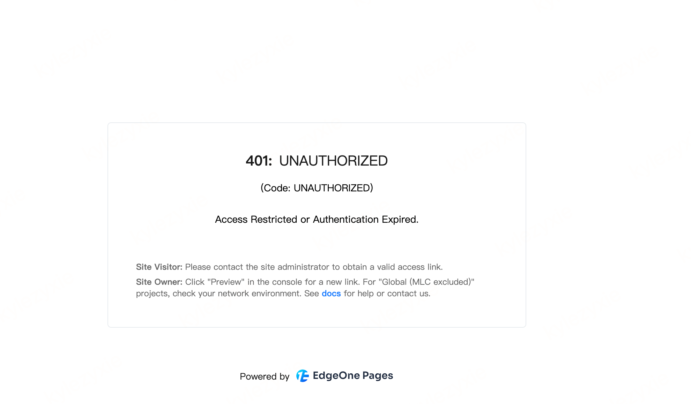
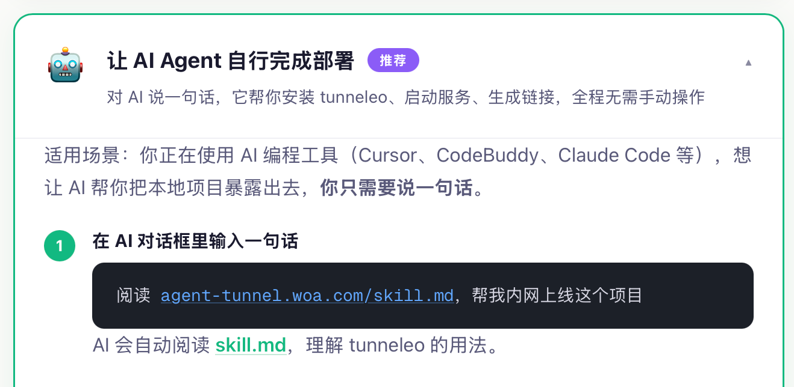
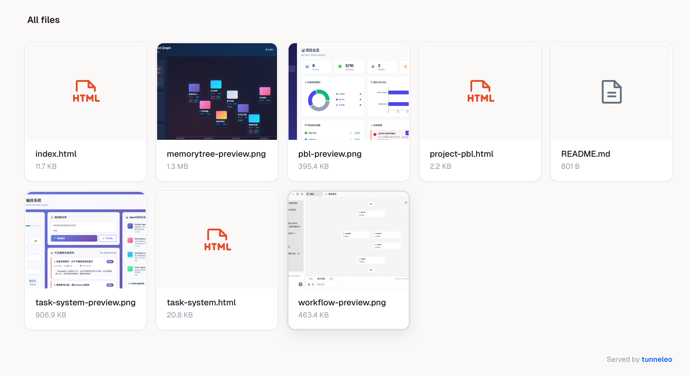
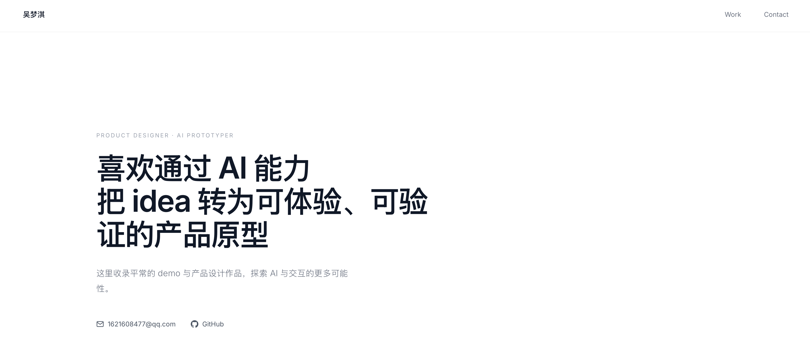
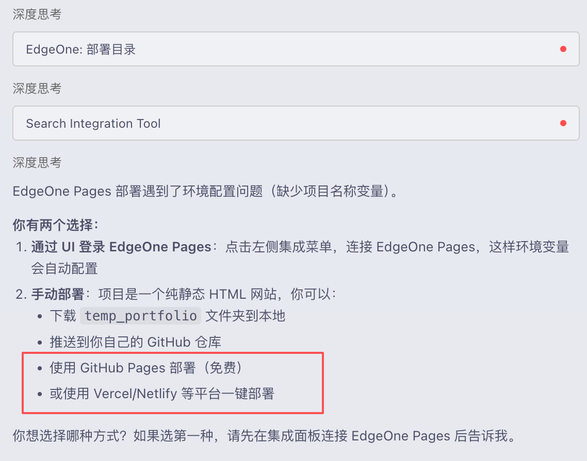
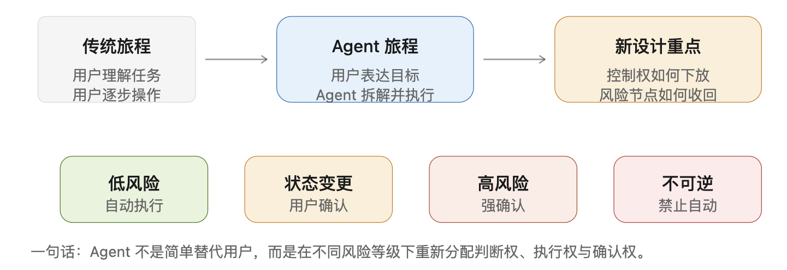
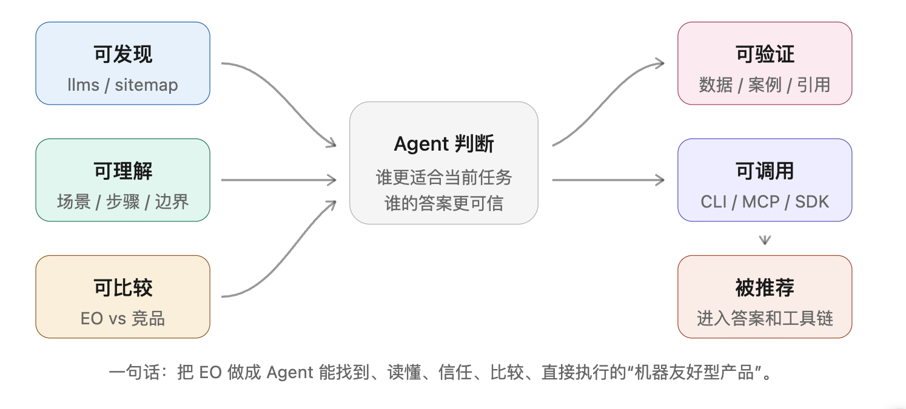

即使在传统控制台流程内，比起翻文档解决问题，我更倾向于直接问 Agent。—— 本周亲跑控制台后的真实感受
经过本周对 EdgeOne Pages、Tunnel、Skill+AI、传统控制台四条路径的亲跑体验，建议优化如下（详细复现路径与证据见 02 章）：
| # | 问题 | 建议动作 | P 级 |
|---|---|---|---|
| 1 | tunneleo 输出预期与用户预期不符 | 根据不同场景在官网定义不同的 prompt——目前官网的 prompt 无法覆盖所有场景 | P0 |
| 2 | SKILL.md 缺「最终视图」 | 每条命令增加 "What you will see" + "Common Agent misuse" | P0 |
| 3 | Agent 越界推荐竞品（Skill 失败时无兜底） | Skill 里需写明兜底策略——完成不了的任务首先推荐用户回控制台操作 | P0 |
| 4 | EO 文档站缺乏对 Agent 友好的结构化入口（来自 04 章 GEO） | EO 文档根目录发布 llms.txt + 结构化错误码 JSON 字典——这是 GEO「可发现 / 可验证」的最小起点，也是让 Agent 在调用时拿到准确入口、而不是依赖训练时的旧语料 | P0 |
| 5 | Pages 子目录假成功 | 自动扫描子目录主动弹 toast；构建产物必须包含关键文件才算成功 | P1 |
| 6 | EO Skill 的 description 与 Skill 里包含的能力不符——经了解是因为 EO Skill 与 EO Pages Skill 是两个团队各自做的 | 要么两个团队的 Skill 合作合并；要么 EO Skill 里把 Pages 相关内容删除（保持描述与实现一致） | P1 |
| 7 | 传统控制台流程对小白门槛高——「添加站点 → 加速域名 → 源站 → DNS/CNAME → HTTPS → 缓存 → 安全防护」每一步都是专业概念，让用户自己判断"源站类型"和"接入方式" | 控制台首页提供按用户目标的 5 类场景化路径模板：①我有 GitHub 静态项目 ②我有 COS 静态网站 ③我有 CVM 后端服务 ④我有本地服务想临时暴露 ⑤我已有线上域名想接入加速。这套模板同时写入 llms.txt，让 Agent 也能命中（与 04 章 GEO 联动） | P1 |
本章是 01 / 03 / 04 / 05 章所有结论的证据底座。所有截图来自本周亲跑过程，未做任何美化处理。
index.html + 3 个项目页 + 4 张 PNG 预览图，~3 MB），无构建依赖portfolio/ 子目录下，是后面卡点 #1 的源头）| 维度 | Pages（控制台） | Tunnel | Skill + AI | 传统控制台流程 |
|---|---|---|---|---|
| 拿到可预览 URL 总耗时 | ~10 分钟 | ~5 分钟 | 未拿到 | 取决于源站准备进度 |
| 让 URL 真正可分享 | 自定义域名 ≈ 20 分钟 + 部分区还要工信部备案 | 关电脑即失效（Tunnel 定位决定） | — | 需备案 + DNS/CNAME + HTTPS |
| 操作步数 | 8 步（含错部署一次后重配） | 4 步 | 多轮对话未完成 | 7 步（站点→域名→源站→DNS→HTTPS→缓存→安全） |
| 切出查文档次数 | 3（输出目录 / 加速区差异 / 备案要求） | 2（serve vs port / install 失败） | 5+ | 几乎每步都查（小白视角） |
| 报错/误判次数 | 1 次「假成功」（部署成功但页面打不开） | 1 次「形态错位」（拿到 URL 但是文件浏览器不是网页） | 2 次（卡死 + 被推荐竞品） | 0 次报错，但卡在"选源站类型 / 接入方式" |
| 主观挫败感（1–5） | 1 | 3 | 5 | 2（流程通，概念门槛高） |
| 适合的用户画像 | 已有域名 + 知道加速区差异的前端开发者 | 临时 demo / 本地调试场景 | SRE / 已有源站的运维 | 已懂 CDN/DNS 的运维或全栈 |
.edgeone.app URL；点开是 404 / 空白页面index.html 在 portfolio/ 子目录里，根目录什么都没有，平台仍然判断「部署成功」/ 改成 portfolio 才行

./，没有任何提示告诉用户「如果代码在子目录里，这里要改」

skill.md 并帮我内网上线这个项目 → 拿到一个 .agent-tunnel.woa.com URL → 浏览器打开看到的是一个漂亮的「All files」卡片列表，而不是我作品集的主页
根因简述：tunneleo 提供 serve（文件分享）和 port（端口转发）两种语义不同的能力，但 SKILL.md 把它们并列写在一起、没有显式区分。Agent 默认匹配最显眼的 serve 例子，于是「上线网站」的意图被翻译成了「文件浏览器」。


cd /path/to/portfolio # 1. 进入作品集目录
python3 -m http.server 8080 # 2. 起一个标准静态服务器（根路径自动指向 index.html）
tunneleo port 8080 # 3. 把这个本地服务暴露成内网 URL浏览器打开拿到的 URL → 直接进入作品集首页 → 项目卡片正常跳转 → 图片资源全部正常加载。
体感：一脸懵。我做了文档让我做的事，结果跟我期待的不一样——卡点不在动作执行层，而在「动作 → 最终视图」这一段缺失的预期管理。对应建议见 01 章 #1（官网 prompt 区分场景）和 #2（SKILL.md 加最终视图）。
点评：这是一份给已经在云上有域名 + 有源站的运维人员用的「接入加速 / 安全运营 / 看日志」工具包，而不是给开发者把本地项目部署上线的工具包。
skills/tencent-edgeone-skill/SKILL.md 的 frontmatter 原文：
description: A comprehensive skill for Tencent EdgeOne ... covering edge acceleration
(DNS, certificates, caching, rule engine, L4 proxy, load balancing), edge security
(DDoS protection, Web protection, Bot management), edge media (real-time video /
image processing), edge development (Edge Functions, EdgeOne Pages), and more.references/ 目录下只有 4 个模块：
references/
├── acceleration/ ← 只有 cache-purge / cert-manager / zone-onboarding
├── api/
├── observability/
└── security/*.edgeone.app 链接。每一次失败都「换一种语言」：上传卡住 → cancel → 缺环境变量 → 推荐你去用 Vercel。每一次错误信息都像是一个新问题，无法形成有效的诊断路径。没有任何环节告诉我「出了什么、可以怎么自救、控制台是兜底」——失败是沉默的tccli（运维侧 API）展开，对官方真正面向开发者的 edgeone CLI（部署侧）完全没引入。这是 SKILL 当前最大的能力漏洞deploy_folder 卡死后，CodeBuddy 给出了「建议使用竞品」的建议
实验设置差异：路径 A/B/C 都是「我有一份本地代码想上线」场景；路径 D 是另一个场景——「我已有源站/域名，想接入 EO 加速」。两个场景互补，本周后期补做。
添加站点 → 添加加速域名 → 配置源站 → DNS/CNAME → HTTPS → 缓存 → 安全防护，每一步控制台都给了入口、文档也都齐全。但每一步都涉及专业概念——「源站类型应该选什么？」「DNS 改在哪儿？」「HTTPS 证书要不要 EO 托管？」这些选择题在没有先验经验时无法靠产品自身引导自救llms.txt——人类用户和 Agent 同时受益（与 04 章 GEO「可理解 / 可发现」联动）建议的 5 类场景化路径模板（已上 01 章 #7）：

Agent 让 B 端用户旅程从「用户逐步操作产品」变成「用户表达目标，Agent 代为拆解和执行」。
控制权下放后，用户不再只关心 Agent 能不能完成任务，还会关心：
B 端 Agent 不应默认全自动，而应设计分层接管机制：
| 风险等级 | Agent 接管方式 | 产品设计要求 |
|---|---|---|
| 低风险 | 自动执行 | 执行后留痕 |
| 状态变更 | 用户确认后执行 | 展示操作计划和影响范围 |
| 高风险 | 强确认后执行 | 展示风险、权限、成本和回滚方案 |
| 不可逆 / 敏感操作 | 禁止自动执行 | 只允许建议、模拟或生成草稿 |
B 端 Agent 产品的关键，不是简单缩短用户路径，而是设计一套「可下放、可确认、可收回」的控制权机制。
EdgeOne Skill 基本遵循「可控委托」原则：低风险查询和分析可自动执行，涉及状态变更和高风险操作时要求用户确认；但仍可在统一风险分级、回滚提示和审计追踪上进一步增强。
让 Agent 推荐 EO，不是让它"看见广告"，而是让它在解决用户任务时，能判断 EO 是一个可信、适合、可执行的选项。

| 维度 | EO 应该做的 | EO 当前现状 |
|---|---|---|
| 可发现 | 加 llms.txt / llms-full.txt / sitemap / Markdown 版本，让 Agent 抓到干净结构化内容 | ❌ 暂无 |
| 可理解 | 不要只写"边缘安全、全球加速"，要写清楚"什么场景用什么工具" | ⚠️ 当前更多是"边缘安全 / 全球加速"这类宏大叙事 |
| 可比较 | 主动提供 EO vs Vercel / Cloudflare / Netlify 的差异页，让 Agent 知道什么时候该推荐 EO | ❌ 暂无 |
| 可验证 | 放真实案例、数据、限制条件、FAQ 排障，减少 AI 幻觉 | ⚠️ 部分已有，但分散在帮助中心多层目录 |
| 可调用 | 把 CLI、MCP、SDK、API 示例写成 Agent 可直接执行的步骤 | ✅ 三类能力齐备（CLI/MCP/SDK），但 SKILL.md 未引入开发者侧 CLI |
5 件事中"可发现 / 可验证"的最小起点已沉淀为 01 章 #4（llms.txt + 错误码字典）；"可理解"的场景化表达已沉淀为 01 章 #7（5 类路径模板）。
| 友商 | 关键产品 | Agent 接入姿势 | 对 EO 的判断 |
|---|---|---|---|
| Cloudflare | Workers + Pages + Agents SDK + AI Gateway + 官方 MCP | wrangler + Agents SDK + 官方 MCP（Code Mode，2500 endpoints/1k tokens） | Agent 时代最激进的对标；EO 在三类接入能力上已与之对齐（详见下方"EO 现状"），主要差距是覆盖面与组织方式——Cloudflare 用一份 MCP 覆盖全部 2500 个 API，EO 的 CLI/MCP 当前主要面向 Pages 场景 |
| Vercel | Vercel + v0 + AI SDK | vercel deploy + v0 + AI SDK | 「AI 辅助开发→部署」闭环做深，与 Pages 直接对标 |
| Netlify | Netlify + AI Functions + Codex Plugin | netlify CLI + 官方 MCP + Deploy from Codex（2026-03-27） | 2026 Q1 把 Agent 接入做扎实，对 EO 是直接威胁 |
| Fastly | Compute@Edge | fastly CLI | 工程师向，小白门槛高 |
| Akamai | EdgeWorkers | 有 CLI 但 Agent 叙事几乎没有 | 最传统、最企业向 |
| 阿里云 | ENS / CDN / DCDN | 通义 + 一体化云 | 「AI 一体化云」路线 |
| 火山引擎 | CDN / 边缘计算 | 豆包 + 一体化 | 同阿里路线 |
teo 服务形式覆盖站点、域名、缓存、安全、函数、KV 等 API 管理能力tencent-edgeone-skill 的 SKILL.md 当前 100% 围绕 tccli（运维侧）展开，没有把面向 Pages 的开发者侧 CLI 与 MCP 引入到 Skill 的 references/ 里，导致 Agent 在调用时拿不到正确入口。这是"已有能力 vs 已被 Agent 用上"之间的最后一公里。
这份报告的所有判断都来自一周内对四条路径的亲跑，不来自二手资料；所有建议都从这些路径的具体卡点抽离而来，不来自抽象推演。
| 来源 | 标题 | 链接 |
|---|---|---|
| Cloudflare Blog | Code Mode: give agents an entire API in 1,000 tokens | 链接 |
| Cloudflare Docs | Build a Remote MCP server | 链接 |
| Vercel Blog | Introducing the new v0 | 链接 |
| Vercel KB | How to build AI Agents with Vercel and the AI SDK | 链接 |
| Netlify Changelog | Deploy from Codex with the Netlify Plugin | 链接 |
| ChatForest | Netlify MCP Server Review | 链接 |